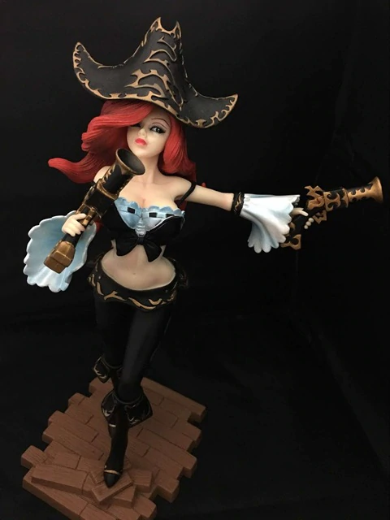
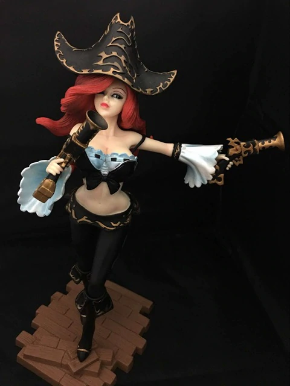
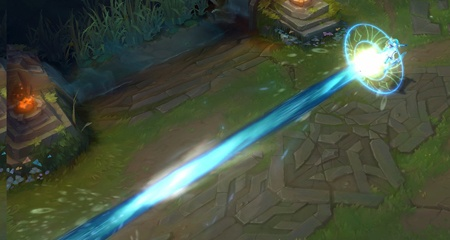

'Fortune doesn't favor fools.'
A Bilgewater captain famed for her looks but feared for her ruthlessness,
Sarah Fortune paints a stark figure among the hardened criminals of the port city.
As a child, she witnessed the reaver king Gangplank murder her family—an act she brutally avenged years later, blowing up his flagship while he was still aboard.
Those who underestimate her will face a beguiling and unpredictable opponent… and, likely, a bullet or two in their guts.
 
Miss Fortune's epic ultimate!
The Story of Miss Fortune
Luxanna Crownguard hails from Demacia, an insular realm where magical abilities are viewed with fear and suspicion. Able to bend light to her will, she grew up dreading discovery and exile, and was forced to keep her power secret in order to preserve her family’s noble status. Nonetheless, Lux’s optimism and resilience have led her to embrace her unique talents, and she now seeks to bring greater tolerance and understanding to her homeland.


Lux's Ultimate
The Story of Lux